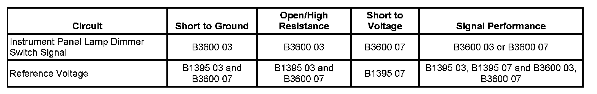

B3600
DTC B3600
DTC DESCRIPTOR
DTC B3600 03
Voltage Below Threshold
DTC B3600 07
Voltage Above Threshold
DIAGNOSTIC FAULT INFORMATION

Perform the Diagnostic System Check - Vehicle prior to using this diagnostic procedure. Initial Inspection and Diagnostic Overview
CIRCUIT/SYSTEM DESCRIPTION
Voltage for the interior backlighting components is supplied from the body control module (BCM). The BCM applies a voltage reference through the 12-volt reference circuit to the headlamp and panel dimmer switch. When the dimming switch is placed in the desired position, the dimmed voltage setting is applied from the headlamp and panel dimmer switch through the instrument panel (I/P) lamp dimmer switch signal circuit to the BCM. The BCM then applies the dimmed voltage to the lamp supply voltage circuits and they are dimmed to the correct level.
CONDITIONS FOR RUNNING THE DTC
The ignition is ON.
CONDITIONS FOR SETTING THE DTC
B3600 03
The BCM detects a voltage that is lower than 0.10 volt on the I/P lamp dimmer switch signal circuit.
B3600 07
The BCM detects a voltage that is higher than 4.97 volts on the I/P lamp dimmer switch signal circuit.
ACTION TAKEN WHEN THE DTC SETS
The I/P lamps are not illuminated.
CONDITIONS FOR CLEARING THE DTC
The BCM clears this code from current when the fault is removed from the system.
CIRCUIT/SYSTEM VERIFICATION
Ignition ON, headlamp switch to HEAD, vary the interior lamp dimming switch from dim to full bright. The I/P lamps should dim and then become full bright.
CIRCUIT/SYSTEM TESTING
1. Ignition ON and clear the DTC. Use the scan tool Incandescent Dimming output control to adjust the dimming level of the I/P lamps from low to high.
- If the lamps cannot be controlled with the scan tool, replace the BCM.
2. Monitor the Dimming Control Signal voltage parameter in the scan tool BCM data list while adjusting the dimmer switch from high to low.
3. If the voltage is above 4.97 volts, test for a short to voltage in the I/P lamp dimmer switch signal circuit.
- If the circuit/connections test normal, replace the headlamp and panel dimmer switch.
4. If the voltage drops below 0.10 volt, test for a short to ground, open, or high resistance in the I/P lamp dimmer switch signal circuit.
- If the circuit/connections test normal, replace the headlamp and panel dimmer switch.
REPAIR INSTRUCTIONS
Perform the Diagnostic Repair Verification after completing the diagnostic procedure.
- Headlamp Switch Replacement
- Control Module References for BCM replacement, setup, and programming. Verification Tests Programming and Relearning